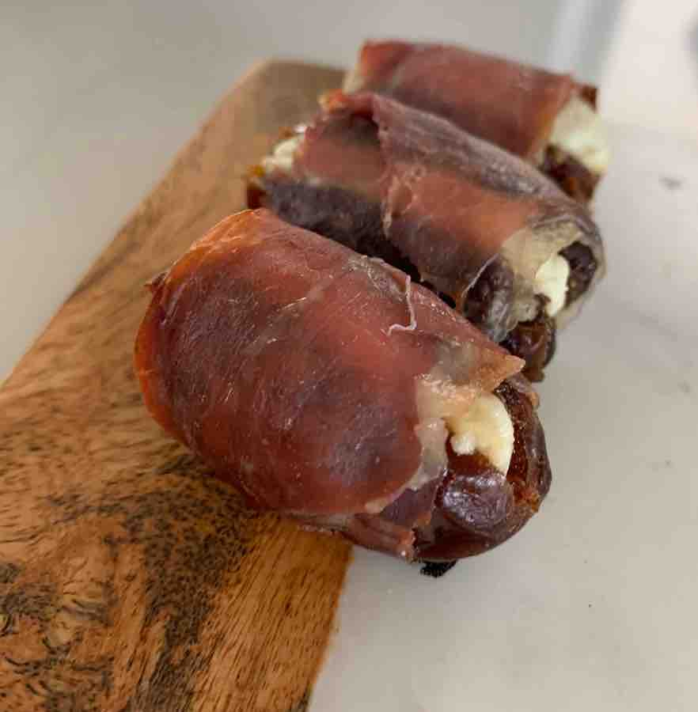

Prosciutto Wrapped Dates Stuffed with Goat Cheese

Easy, quick (and gluten-free friendly) recepie. This appitizer can be made ahead and chilled
in the refriderator until ready to heat in oven.
Ingredients
-
1 package of fresh dates
-
4 oz package of sliced prosciutto
-
5 oz goat cheese
Steps
- Preheat oven to 400F
- Slice open dates and remove pit
- Spoon goat cheese into open date
- Slice prosciutto into strips, cut lengthwise and then in half
- Wrap cheese filled date with prosciutto
- Roast in oven until prosciutto is crispy
Omit cheese for dairy free version.